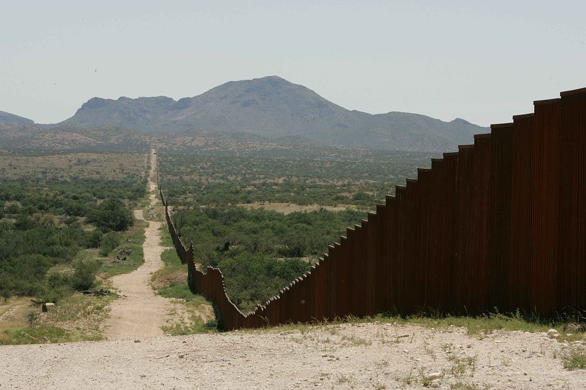
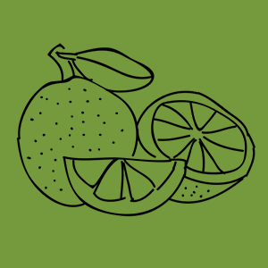
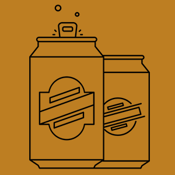
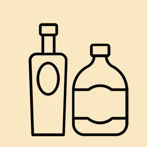

How Much Will Your Guac Habit Contribute to the Border Wall?
By Sarah Stein Kerr

A section of the US-Mexican border wall. Photo: U.S. Fish and Wildlife Service via Wikimedia Commons
Do you like avocados? Tecate Beer? Congratulations! You may soon be contributing to America’s next big infrastructure project: the southern border wall.
In January, the Trump administration indicated that it is considering a plan to levy a 20 percent tax on all goods imported from Mexico. While hurting Mexican industries, this tax would also directly affect American consumers, many of whom unknowingly
consume products from Mexico every day.
So how much would you pay for the wall through what you normally eat and drink?
Enter your monthly consumption of the top 10 food and beverage imports from Mexico to find out.
Mangoes
Mangoes per month
Avocados
Avocados per month
Tomatoes
Tomatoes per month
Bananas
Bananas per month
Tangerines
Tangerines per month
Strawberries
Containers per month

Limes
Limes per month
Pineapple
Pineapples per month

Beer
Beers per month

Tequila
Bottles per month
Through consuming these 10 items, you will contribute
dollars to the southern border wall.
Your money will build
square feet of the wall.
Disgusted? Happy? Sad? Whatever your politics, the number may come as a surprise. After floating this idea, the Trump administration walked it back, stating that it was one of many ideas currently on the table.
Now, three months later, Republicans are eyeing tax reform as their next big priority and a call for proposals to design the new border wall closed earlier this week.
Constanza Gallardo, 26, a Mexican graduate student studying in New York City was unnerved by the idea that buying products from Mexico might directly pay for the border wall in the future, a project she does not support.
“It would be a personal struggle,” said Gallardo. "Because you want to buy these things because you love to eat them and some money would go to Mexico. So, in some ways I am helping my country but in other ways I am helping to build the border
wall.”
In a report put out by The Tax Foundation, a non-partition tax policy research institute, tax expert Kyle Pomerleau writes that the new import taxes on Mexican goods would likely come with a host of sweeping changes that would revamp the way companies
pay income tax in the United States.
In some ways I am helping my country but in other ways, I am helping to build the border wall.” Contanza Gallardo, 26
In the unlikely event this happens, Pomerleau establishes that the burden of the new import tax may also not be passed on to consumers in the long-term.
"...the literature suggests that exchange rates would adjust, but it could take time for that to translate through prices. As a result, the tax could fall on consumers and producers in the short run," writes Pomerleau.
Beyond grocery items and alcohol, Mexico also exports large quantities of car parts, chemicals, clothing and other goods to the United States. Therefore, beyond food consumption, contributions from individuals would likely be higher.
So while it is currently unclear if the administration will move forward with a border tax, the question of who will pay for the wall also remains anyone’s guess.